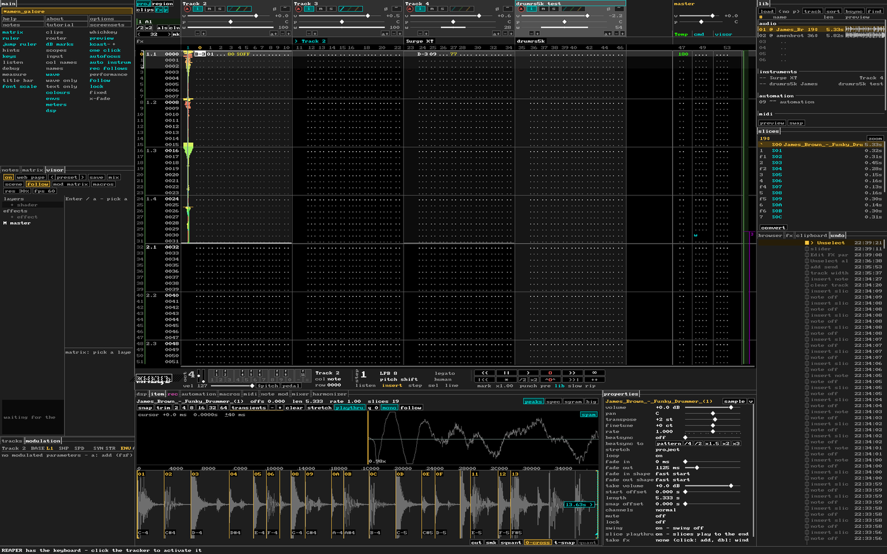
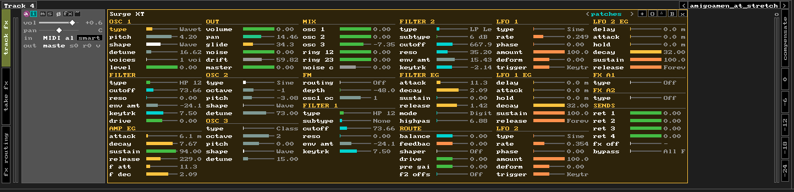

jf_tracker
a tracker shell over the REAPER project, with Vim keys
Why
Hands stay on the home row. j and f are the two keys with bumps under your index fingers, and that is the name. h j k l move the cursor, and f jumps to anything on screen by a two-letter label. The mouse is optional.
It is REAPER, hard native. The tracker is only a shell over your project. What you see are real tracks, items, takes, MIDI notes, fixed lanes, regions, envelopes and FX. There is no file format of its own: close the window and the project is exactly as it was, and every edit is one REAPER undo step.
The grammar is Vim: modes, operators with motions (d3j, dw, yy), counts,
registers, the . repeat, macros, the : command line. Every control is a letter, never an icon: when a
sign is needed, it comes from another alphabet (Δ delta solo, ø phase).
A few rules hold everywhere, and changes keep to them:
- Nothing of its own. A feature writes what REAPER already has (items, envelopes, automation items, take FX, routing) instead of inventing new objects. If REAPER can store it, the tracker only shows and edits it.
- One function, one key. No second way to the same thing; keys are mnemonic (t theme, s slice).
- Two states toggle, more open a list. A button flips on / off; three or more values open a dropdown with the current one marked.
- z is how you look, g is where you go, the menu is what you do. Enter opens the smart
dropdown of the field under the cursor: it shows what can be typed there. Type the value (
9E,C#4,0U): once it can only be one value it goes in, no Enter needed (0V9Ein one go); or pick with the mouse; hex cells show the decimal, the tip says what the value does. - Letters, not icons. Every control is a word or a letter.
First steps
| h j k l | move: field, row. gg G start / end, { } bars |
| f | labels on everything on screen: type two letters and you are there |
| m | the keyboard on / off. On, it has priority: the top row and the digits play notes, z x change the octave. Off, every key is Vim |
| Esc | INSERT and back, as in Renoise: in INSERT the keyboard writes notes (with the keyboard off, i works too) |
| Space | play / stop |
| Tab | next module: the keyboard goes there (a pink frame shows where) |
| F2 … F6 | F2 tracker ↔ item tab (from any tab — back to the tracker), F3 modulate and on through the tabs, F4 midi, F5 scopes, F6 master; the same key again — back to the tracker |
| ` \ | the main menu of everything (at the main module) / the context menu of what is under the cursor, the same as the right click. In INSERT ` is the note-off |
| Ctrl+/ Option+/ Cmd+/ | find an effect (all of them) / inside the DSP chain of the track / a file in the browser |
| ? | the keys of the focused module |
:tutorial | a guided tour, twelve steps |
On screen

- main module: help, about, options, notes, tutorial, screensets; quick switches laid out like the screen
- top panel: tabs
recitemmodulatemidiscopesmaster - matrix: the song as patterns (regions) × tracks
- tracker: rows = steps, columns = tracks; note · instrument · volume · delay · commands
- transport strip: position, BPM, signature, beats, octave, step; the keyboard on the left (m)
- lib and slices: the sounds of the cursor track and the slices of the selected one
- browser: files, Media Explorer databases, projects, kits
- DSP: the FX chain of the cursor track, with meters
The module with the keyboard focus has a pink frame; in INSERT the tracker frame is red. By default a plain click works
inside a module and leaves the focus where it is; Option+click moves the focus (option focus by mouse).
Panes
The window is laid out like tmux or zellij: a tree of splits, every module a pane, several modules in one place are a stack of tabs (their titles sit in the top line of the pane border). The tracker is a pane too and always stays. The layout is saved with the window and in screensets.
- ⌘h ⌘j ⌘k ⌘l — focus the neighbour pane (as in dwm); with ⇧ — move the pane there.
- ⌥Tab — next pane in order; Ctrl+Tab — next tab of the stack.
- Ctrl+W — pane mode (stays on until Esc, numbers on the borders, the keys in a pop-up):
g+letter go to a panel,s/v+letter split below / right,T+letter into this stack,Bout of the stack,x/Xswap,+ - < > =size,zzoom,chide,Spacenext layout,uundo. :pane dsp with item,:pane browser hide,:pane matrix right,:pane reset,:pane wide.- Mouse: click — focus, click a title — that tab, drag the line between panes — size (double click — equal), right click a title — hide.
Panel letters: m matrix, b browser, l lib, n main, s slices, o notes, f fx list, d dsp, r rec, i item, a automation,
M midi, h harmonizer, c scopes, S master, v video. A hidden panel comes back when you go to it.
Options → panes off brings the old fixed layout back.
NORMAL
⌥H ⌥L track · 0 $ first / last column
w b e event · W B any column
gg G 10G · { } bar
^D ^U half page · zz center
yy y{motion} copy · p paste
c{motion} change · s split · M mute
^A ^X ±1 · r{value} set
u undo · ⌘⇧Z redo · . repeat · q @ macros
za zM zR fold tracks
+ - LPB · F follow · m keyboard on / off
a envelopes · A any parameter (fzf)
` menu · \ context · ? keys · F1 help
With the keyboard on (m) the top row and the digits play notes and z x change the octave; the rest of the keys stay Vim. A count goes before any motion or edit: 3j, d2w, 5@a. A Russian layout works by key position. After d y c g z the status line lists what can follow.
INSERT

| Shift+note | listen only, nothing is written |
| Ctrl+note | a held note: its length is as long as you hold the key |
| sliced sound | q writes the whole sample, the next keys its slices: 2 w 3 e … = slices 1 2 3 4 … (as in Renoise); Option+key — the selected slice at that pitch, Cmd+key — the whole sample at that pitch |
| MIDI keyboard | writes into the cursor column the same way |
Edits, drawn
What each key does to the rows and to the note (the item in REAPER). | — the note sounding, OFF — where it stops, > — the cursor row.
Rows
| Backspace | delete the cursor row of the track: everything below moves up; a note through the row is a row shorter (its OFF moves up); a note starting on it is deleted. In a MIDI clip the clip is not cut. Shift — all tracks |
| Option+Backspace | insert an empty row at the cursor; below moves down; a note through it gets longer. Ctrl+Option+Cmd+J — under the cursor, K — above it; Shift — all tracks; a count — N rows |
| Delete / x | only the event under the cursor, nothing moves |
One note (NORMAL)
| Option+Shift+J / K | the end of the note a row later / earlier (not stretched; past the sample — the loop of the instrument, else silence) |
| Option+Shift+H / L | the start a row earlier / later; the place in the file moves with it (as trim in REAPER) |
| Shift+Option+Cmd+J / K | slip: the note stays, the sound inside it moves a row down / up |
| Ctrl+Enter | all the properties of this one note in a box (volume, pan, transpose, rate, fades, offset …): j k row, h l value, Enter list, R reset, Esc close |
:legato fill / the legato button | each note lasts to the next one, not stretched (the plain :legato stretches) |
Slices are pooled
All notes of one slice play the same piece of the sample. Move the start of a slice in the item tab — every note of that slice (transposed ones too) starts its sound at the new place; the notes themselves stay where they are and keep their length.
Copy and paste
| yy V…y | copy rows (V — on every track); the clipboard tab keeps the history |
| p | paste at the cursor: a note already on that row is replaced (with x-fade on — kept); the pasted notes keep their lengths |
| P | paste beside, into a new subcolumn |
Commands
| typing | the code shows in the cell (0R__), the cursor waits for the digits |
| ` on a command column | stop what runs there from the rows above (0D.. → 0D00), like a note-off for commands |
| Ctrl+Option + + / - | the command above in this column again, value +1 / -1, on this row; the cursor goes a step on (the volume column too) |
0Rxy | retrigger inside the note: a copy every y/16 row, each x/16 quieter; the copies have no cells of their own |
Recording
| Ctrl+R / F12 | the rec tab (the jf_rec ring of the track) |
| Option+R | record into the tracker: the cursor track is armed, recording starts at the cursor row |
shift (under rec), :shiftrec | shift rec: waits for a MIDI note - that note starts the recording from the cursor row, at the project rate (set x0.5 and play: it plays back twice as fast); the first note lands on the row, automation records as REAPER writes it (envelopes in latch / write); REAPER pre-roll is skipped for it; again - cancel, Space stops |
| Cmd+R | record a new sound: the take goes into the lib of the cursor track as its own instrument |
| while recording | Space — keep, the cursor stays where it stopped; Enter — keep and the cursor goes back to the start; Esc — delete the take (asks first; option ask before deleting a take) |
VISUAL
v selects a block, V whole rows, Shift+hjkl selects from the cursor and extends (in INSERT also s); a mouse drag in the body does the same. On a selection:
d y c M ^A ^X r{note}, and commands
such as :interp vol (a ramp), :arp up 2, :scramble, :legato.
Option+drag on an event moves the whole block.
: commands
: opens the command line, Tab completes, the help line shows the arguments. The ones you will use most:
:len N :sig 5/4 | pattern length in steps (Ns seconds, Nb bars) / time signature for the project or one pattern |
:add [bars] [name] :name | a new pattern after the last one / rename the cursor pattern |
:arp :legato :interp :scramble | generators and shapers over the selection or the pattern |
:quantize :beatsync | smart quantize of the sample / fit it to the tempo |
:pt :big :macro | PT-mode (four big channels, a nod to ProTracker) / big font / the song from above, a row per bar |
:wave :reg :lpb :theme :dock | view: waves, only the cursor region, rows per beat, theme, docked or floating |
:options :tutorial | all options in one window / the tour |
Matrix
The song is a list of patterns. A pattern is a REAPER region; regions with the same name are copies of one pattern
(aliases), and an edit in one copy goes into all of them (autosync). Each slot row shows the name, the time
signature and the length; a click on them edits. Cells are pattern × track.
Pattern codes, as Elektron banks: a name that starts with a letter and a number (A1, D12 verse)
is a code, shown in the number box. The letter is a family of variants: a new pattern takes the next free letter
(C1), a clone the next number of its letter (A1 → A3), an alias the same code. A length
typed on a free bar makes a pattern there. A region without a code over other regions is a section
(verse over A1 A2): not a slot, its name stands in the ruler and a strip marks its slots; its edges follow its
first and last pattern after every edit. Old names keep working as patterns. Codes are two characters by default
(A1 … A9, AA … AF, the variant a hex digit); option pattern codes = dec makes
A10, A11; both kinds are read. The matrix menu converts: c old names get codes,
h / d codes to hex / decimal (:codes codes|hex|dec).
| Space on a slot | queue it: it starts at the end of the playing one (live) |
| o O dd yy p | new slot after / before, delete, copy, paste: slots edit like Vim lines |
| < > | another pattern in this slot |
| A / C / U | repeat linked to the right / free copy / make this repeat unique |
| ^H ^J ^K ^L | move the matrix cursor straight from the tracker |
Lib and slices
The lib is the sounds of the cursor track: every distinct audio source its items use, plus the track library (items
after the =LIB marker at the end of the project). A note is a linked copy of its sound, so an edit in the
item tab changes all its notes. Click — select (and listen, with preview on); double click — drop the sample
onto the track at the cursor.
The slices module lists the slices of the selected sound: j k select, the selected slice is what the item tab edits.
Item tab

| s menu | st slice at transients · s8 (2 4 1 3 6) equal parts 8 (2 4 16 32 64) · sd delete slices · sq smart quantize · sz autotrim |
| mouse | drag a slice line to move it, a click selects it; the strip under a slice slips it |
| selection | drag over the wave. Enter — insert at the cursor; drag it onto a track or the lib — the whole sample goes into the lib and the selection becomes its slice |
| views | peaks spec sgram (a real spectrogram) big |
| properties | volume, pan, transpose, rate, beatsync, keep pitch, stretch, loop, fades: J K row, H L value |
| sustain loop | a long note holds as long as you want (pads, 808s): sustain loop on finds two places in the steady part of the sound that are alike by the spectrum and the loudness, the seam is fitted by the wave shape and sits on a zero crossing; sus start / sus end / sus x-fade move it by hand (Shift - fine), R finds it again; the loop is the cyan band on the wave; a note of such a sample lasts to the next note or the pattern end (a held key - its hold); in REAPER the note is two items - the note itself (it plays up to the loop start) and a looped section of the file after it, the tracker shows one note and rebuilds the second after every edit; :sus [find|on|off|start end [ms]] |
Automation and modulation
Three different things, three places: what is drawn in time, what moves while it plays, and what every note starts.
| automation | a value over time, the same every play: REAPER envelopes and automation items, shown as envelope columns. Opt+A turns the last touched knob into a column. ze picks how a column looks: curve, values, or steps (a small fader on every row, as on a 303) |
| modulation | a parameter moved by a source while it plays: REAPER's own LFO / audio follower / parameter link (the modulation tab) |
| note mod | modulation started by every note of a sample (the note mod module next to the properties). A slot is a parameter and a curve: each note gets a pooled automation item from its start, its length. One curve for all the notes; rate - higher notes run it faster; loop - it repeats to the end of the note. Insert, move, copy or delete a note - its automation item follows |
MIDI from sample notes. Sample notes are audio items and send no MIDI, so MIDI modulators (counters, key trackers,
envelopes inside plugins) cannot see them. midi trig in note mod puts a tiny take FX on the sample and its notes:
each note sends a note-on to its own track, with its pitch and its volume as the velocity. No hidden track, no new routing:
whatever MIDI modulator already sits on the track reacts. The notes go on bus 1, channel 16, because ordinary plugins hear
only bus 1; a track that also has a MIDI instrument will hear them too.
Browser
Files, Media Explorer databases, projects and track-template kits. j k move, Enter /
double click — into the lib of the cursor track, Cmd+Enter — replace the sample of the selected sound
everywhere, drag — onto a track. / searches right in the list (fzf syntax). play listens to the selected
row, keys lets the note keys play it at their pitch. 1…5 are folder bookmarks.
The pm tab looks inside other REAPER projects: the folders and .rpp files from your default project
path (or the project index of jf_pm, if it is installed). Enter on a project shows its tracks, samples, regions and
markers; Enter or a drag on a track inserts it into this project with its items, FX and envelopes, on a region —
a subproject cut to that region, at the cursor. o opens the project itself in a new tab.
DSP

The FX chain of the cursor track as blocks. Thin meters at the edges show the input and the output; c under the
output keeps the output as loud as the input (gain compensation through REAPER's own Volume Adjustment), so you judge an
effect by its sound, not by its loudness. Each block has Δ (hear only what the effect adds), B
bypass, O its window, a preset row < name >. The stock ReaPlugs get pictures (EQ curve,
compressor curve, bands, delay taps), Airwindows get their category and description.
| h l / j k | block / parameter; + - value; b bypass; o window |
| dd yy p cc | delete, copy, paste, pack into a container |
:fxa :fxb :morph N | A/B snapshots of a block and a morph between them |
| / or the list on the left | add an effect; drag a block by its title to reorder |
Values by hand
Every slider on the screen — a track's volume and pan, the fx parameters in a track header, a DSP device, the mixer faders, an XY pad — can be moved without aiming at it. Three ways, from the keys to the whole trackpad:
| f on a slider — FADE | the slider gets an amber frame and the status says -- FADE vol --:
h l value (H L fine), j k the next one, 0 reset,
Esc done. In the properties a jumped-to slider is framed the same way |
| hold Ctrl + move | the selected parameters change (else the one under the mouse, else the FADE one): up is more, Shift fine, two selected — XY. Cmd+click adds to the selection, Shift+click — a range |
| hold Ctrl+Option + move | TRACKS: the window width is one zone per track — sideways picks a track, up / down moves its fader. Add Cmd and the whole window is a pan pad for that track |
| hold Ctrl+Cmd + move | SLIDER: the bank of up to 8 sliders nearest the mouse is framed, the one you move now — bright. The trackpad is split into one zone per slider, the way they lie: horizontal sliders (headers, DSP) — up / down picks, sideways changes; vertical faders (mixer) — sideways picks, up / down changes; an XY pad — both at once. A value moves only after a clear move along its axis, so sliding over the zones does not touch them. Let go — one undo |
A click on a parameter's name only selects it; the value changes on its bar. Who wants the old way (a click anywhere on the
row sets the value from the mouse) finds it in options → odd options → name click sets.
Transport strip
Under the tracker: position, BPM, LPB, time signature, the beats of the bar, metronome, follow, loop, octave, step,
instrument, velocity. Click or wheel changes a value; a click on the signature asks whether it is for the whole project or
one pattern. The keyboard on the left shows what the note keys play and hides with m; the strip stays. Options:
big BPM, and status bar: keyboard puts the status line into the strip.
Tracker → REAPER
| tracker | REAPER |
|---|---|
| row | a step of the grid in quarter notes; LPB only zooms the view, the project does not change |
| track column | a track; folders are indented |
| lane column | a fixed item lane |
| audio note | an item: the note is its pitch, volume is D_VOL |
| MIDI note | a note of the take; OFF is the note-off |
| command column | two-char code + two hex digits, as in Renoise: 0x effects (0S slice / offset, 0M volume, 0P pan, 0U 0D pitch slide, 0G glide, 0V vibrato, 0A arpeggio, 0I 0O volume slide, 0R retrigger, 0Y maybe), Sx sample properties (SI SO fades, SB beatsync, SF finetune in cents, 80 = 0, SL loop, SM channel mode), Zx song (ZT tempo, ZJ jump to a sequence slot); the field has two halves, as in Renoise: the code on the left (one letter is 0x - D = 0D; S and Z are prefixes - SI, ZT), the value on the right (two hex digits; typed alone they keep the code there or the dim one from above); typing a code and its value replaces the command in that column; only the value - Enter (the list with the current one) or + -; every row has its own command: on a row inside a note it works from that row to the next command of the same kind (or the note end), 00 stops it - as in Furnace; rows where a command still runs show it dim, ` there writes its stop (the same key as note-off); item properties (0S 0M 0P SI SO SL SM SB SF) belong to the whole note and are typed on its first row - on a row inside the note the tracker says so and writes nothing (it used to put them into the row above silently); Enter on the field - the list (code and name) |
| sound (lib) | a distinct audio source; slices are times stored on the item |
| pattern | a region; same name — the same pattern |
| section | a region without a code over patterns; follows them |
| envelope column | a visible track envelope, in its theme colour |
| undo | one REAPER undo step per edit, named jf_tracker: … |
Architecture
One rule holds it together: one module reads REAPER, one module writes to it, and everything else works on the snapshot in between.
model reads the project only when it changed (project state, LPB, MIDI hash) and builds a snapshot of rows,
columns, sounds, regions and envelopes. draw paints it and reports what is under the mouse. vim turns keys
into motions and edits; every edit goes through edit, inside one undo block, and after it the copies of a pattern are
synced. The files: jf_tracker.lua (window and wiring), _model, _draw, _vim,
_edit, _matrix, _alias, _slicer, _browser, _preview,
_dspmods (the DSP pictures).